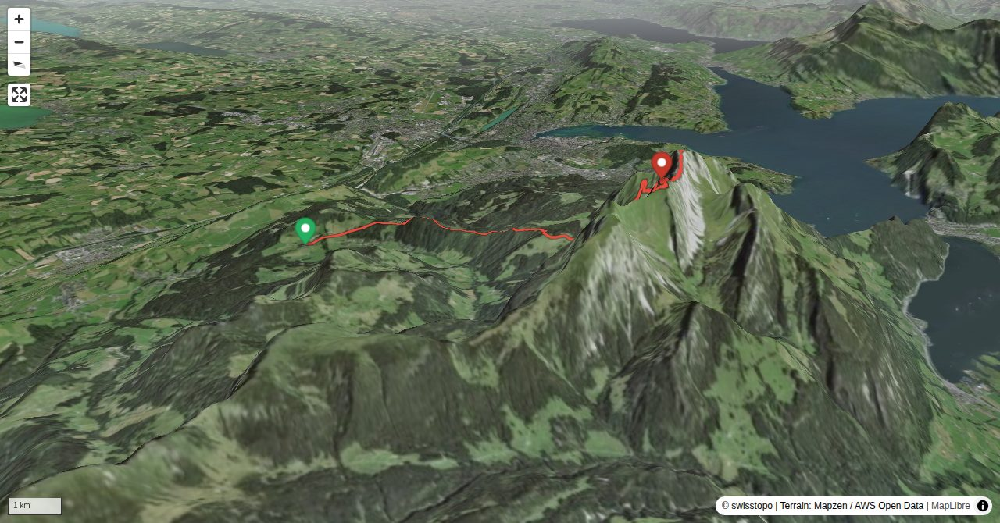

Pilatus is one of the best known and most interesting mountains of the foothills of the Alps. A railway and an aerial cableway go up to the summit on Lake Lucerne, the former from the north (Kriens) and the latter from the south (Alpnachstad). However, despite the infrastructure for a large number of tourists Pilatus has a whole range of lone, secluded, surprising, multifaceted and sometimes challenging routes in store for you. The route presented here – the «Alte Tomliweg» – is a spectacular, but not too difficult route to the highest point of the massif, called Tomlishorn. From there you hike to the summit station of the railway and the cableway, which allows for an exciting ascent and a knee-friendly descent. Around Tomlishorn very often alpine ibex can be observed at close range.
Quick Facts
| Summit elevation | 2120 m |
|---|---|
| Difficulty | SAC T4 Alpine hiking with exposure, rougher terrain, and sections that are not suitable for beginners. Guide |
| Trailhead | Eigenthal, Eigenthalerhof |
| Distance | 9.8 km (out-and-back) |
| Total ascent | ~1211 m |
| Elevation range | 1017-2120 m |
| Route sources | SAC Route Portal |
Photos


All photos: SAC Route Portal
Interactive Route Map
Map tiles: © swisstopo (CC BY 3.0) | © OpenStreetMap contributors | Map library: Leaflet. Route line is approximate — verify against the SAC Route Portal before going.
3D Terrain View

Tiles: © swisstopo (SWISSIMAGE) + AWS Terrain Tiles. Powered by MapLibre GL JS. Open fullscreen ↗
Route Details
Alter Tomliweg
- TODO: Step 1 description.
- TODO: Step 2 description.
Terrain & safety
Between Chastelen and Tomlishorn there are faint paths in the scree, followed by an exposed traverse on a one meter wide ledge and at the end some scrambling passages (fixed ropes). As the route lies mainly in the shadow, it is often wet (thus precarious), and in the spring you encounter treacherous fields of old snow.
Source: SAC Route Portal
Getting There & Back
Start: Eigenthal, Eigenthalerhof (1017 m)
Directions from to Eigenthal, Eigenthalerhof
End: Pilatus Kulm, Bergstation (2118 m)
Directions from Pilatus Kulm, Bergstation back to
Weather Planning
7-day summit forecast (live)
Loading forecast…
Elevation Profile
Computed from the inlined GPX track (elevations from SwissTopo height API).